SYSTEM ARCHITECTURE OF TEJAS
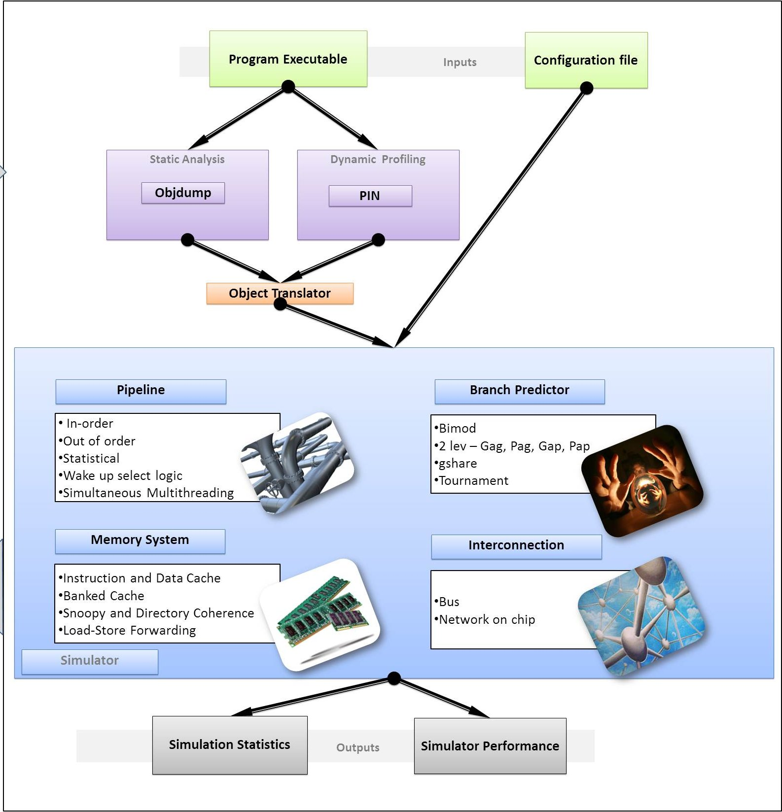
The System Architecture of Tejas consists of the following parts:
- PIN Instrumentation
- Communication Medium
- Feeder Engine
- Translator
- Pipelines
- Memory System
- Network On Chip
1. PIN Instrumentation
CausalityTool implements the functions to communicate with PIN tool. It initializes the PIN by giving appropriate parameters and also contains different PIN instrumentation functions. Different instrumentation functions that are implemented in Tejas is as follows.
CausalityTool contains the thread start and thread finish
instrumentations functions. Thread start function put a check for the
currently active threads and also set the status of the thread to
alive. Correspondingly thread finish functions decreases the number of
alive threads. Another instrumentation function that implemented in
this tool is Instruction. This functions is getting called upon each
instruction. Within this function, we are checking for the type of the
instruction and check whether it is a branch or memory operation. We do
the respective functions for branch and memory operations. FlagRtn
function implements the instrumentation function for routines like
pthread cond broadcast.CausalityTool implements the function to handle
the finish signal from PIN side. Subset simulation functionality is
also implemented in causalityTool within printip() function. It checks
for the current number of instructions and complete the simulation once
it reach the specified limit.
- Speed of causalityTool:
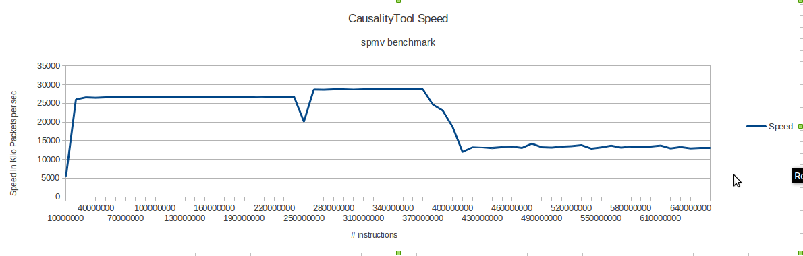
2. Communication Medium
All the application threads run in parallel, and potentially
generate gigabytes of data per second. It is necessary to send all of
this data to Tejas using a high throughput channel. We evaluated
several options – shared memory,memory mapped files, network sockets,
and Unix pipes. Unix pipes were found to be the slowest of all. Hence,
we ceased to consider them early in our design process. As an
experiment, we wrote a small compute intensive loop based benchmark.
For this experiment, we measured the time that it takes to transfer 1
GB of data from PIN to Java. Since we have finite buffers, we need a
method for the consumer(Java thread) to indicate to the producer(PIN)
that it cannot accept more packets for the time being. In the case
of sockets, we use a dedicated socket from the consumer to the
producer, and for shared memory or memory mapped files, we use shared
variables to indicate the status of the consumer. Figure shown below
gives the results about comparison of various inter-process
communication mechanisms.
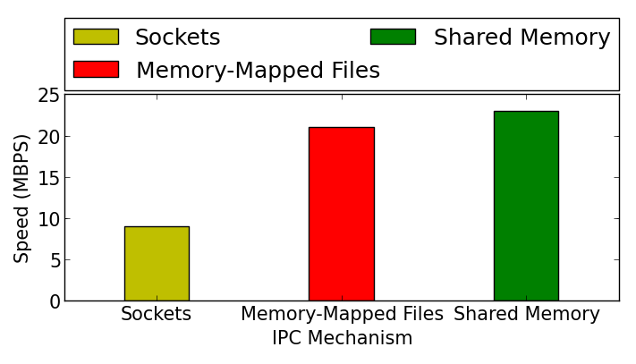
We observe that sockets are the slowest (10 MBps). This is because they make costly system calls to transfer data across the processes, and buffering is done by the kernel. However, they are also very versatile. We can run the application threads on one machine, and run simulator threads on another remote machine. For high throughput, shared memory is the best option (24 MBps). Communication with memory mappedfiles is slower, because we need to synchronize data with the hard disk, or the disk cache in main memory.
Shared Memory
We use the shmget and shmat calls in Linux to get and attach shared
memory segments to the PIN processes. Since the number of segments are
limited, we use a single shared memory segment. For n application
threads, we split the shared memory segment into n separate contiguous
regions. The structure is shown in the diagram below. Each region
contains a header, and a circular queue. We fix the size of each packet
to 192 bytes, and allocate space for 50 packets in each circular queue.
The header contains the status of the thread, the number of outstanding
packets in the queue, and its start and end locations.
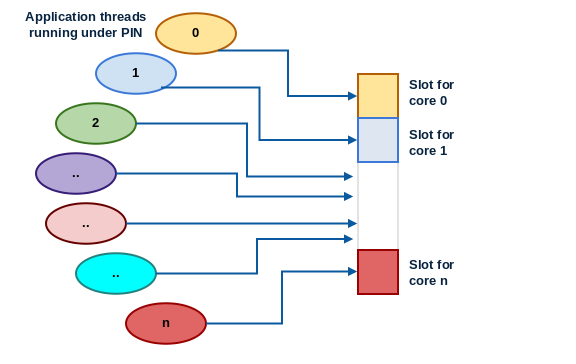
The important point to note here is that the custom functions in PIN are written in C++, and the simulator threads are written in Java. There is no support for Linux shared memory segments in Java. Hence, we use the Java Native Interface (JNI) to access shared memory. It allows us to write code in C that can be linked to the JVM in runtime. The second issue is that of locking. We need to be able to get locks to update the pointers to the circular queue, and the count variable. We use a Peterson lock optimized for the Intel x86 TSO (total store order) memory model. The code shown below implements a Peterson Lock for TSO systems with three fences (hardware and compiler).
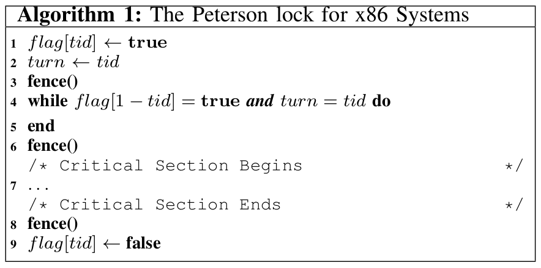
Along with updating the header, we also read the execution packets that have already been transferred to Tejas using dedicated JNI routines. JNI uses Intel x86 string instructions to transfer large amounts of data between memory locations in one go. Hence, we homogenized the structure of a packet, at the cost of space. Each packet contains three 64 byte fields. We use a single JNI call, memcpy(void∗, const void∗, size t), to copy an entire memory area into the address space of Java threads. Secondly, note that Java is big-endian while Intel x86 is little-endian. JNI handles this by providing its own datatypes such as jint, and jlong. While transferring values to the JVM, JNI routines seamlessly convert little endian values to big endian values.
- Due to the difference in speed of the production and consumption of packets, pipelines of many cores go empty for many cycles. This difference causes variability over several executions. This gives instability in IPC over several executions of the same benchmark. To counter this problem, we maintained a record of the live application threads and kept track of the packets being received from the communication medium. If the pipeline of any of the core goes empty, then all the pipelines wait for that pipeline to get filled. This helps in the stabilization of IPC as we execute any cycle when all the pipelines have atleast one instruction to execute.
- In case some application thread is stuck due to a synchronization primitive, like waiting on a lock, signal or barrier, then all other threads were getting stuck along with that thread after implementation of case 1. This sometimes resulted in a deadlock situation, as other threads were waiting for the stuck thread's packets to come up while the thread which is stuck is waiting for some thread to release the lock(or any similar case). This creates a circular waiting condition. To counter this condition, we instrumented function_enter and function_exit on the emulator side and send packets over the simulator side to tell that a particular thread has entered a synchronization call and it may get stuck. After receiving such packet, we do not count that thread as live till we receive a function_exit packet for that thread for that particular synchronization call.
4. Translator
Comparison with other simulators
Typically, researchers in the field of computer architecture use simulators like simple-scalar and super-scalar to implement their research ideas. The challenge with these simulators is that they are tightly coupled with an instruction set. simple scalar is based on Portable Instruction Set Architecture (PISA) and super-scalar is based on the MIPS instruction set. Both PISA and MIPS are not the most widely used instruction sets. To simulate a workload for this architecture on a standard x86 desktop machine, the user has to cross compile the benchmark for a specific ISA. From previous experiences, it has been found that cross-compiling standard benchmarks like Parsec and Splash2 for the MIPS and PISA instruc- tion set is tough. Even after cross compilation, we do not retain all the architectural optimizations that a compiler would have performed for the desired architecture (gcc_optimizations). In Tejas, we avoid this problem completely by accepting an executable in the instruction set in which it needs to be simulated. We convert the instruction set into a Virtual Instruction Set Architecture (VISA) at the loading time of the simulator. The major problem in supporting multiple ISA is to parse them completely at the byte level format. We relax this constraint by using standard GNU utility like objdump to perform the first level disassembly for us. We do not try to parse all the instructions in the executable and this helps us to make the design of translator to be simple and scalable.
VISA (Virtual Instruction Set Architecture)
The VISA instruction set is fairly abstract, and it has sufficient information to perform a timing simulation. It is not concerned with different behavioural aspects of the instruction set. Almost all major architectural simulators break down emulated instructions into a simpler instruction set. We support four different type of operands - integer register, floating point register, immediate value and memory operand. A memory operand can have an integer register and an immediate value as sub-operands. We support three different operations on integer and floating point operands - ALU, Multiplication and Division. Load can fetch a value from memory into an integer or floating point register. Jump represents an unconditional transfer control to a different point in the program, whereas branch uses a conditional statement.
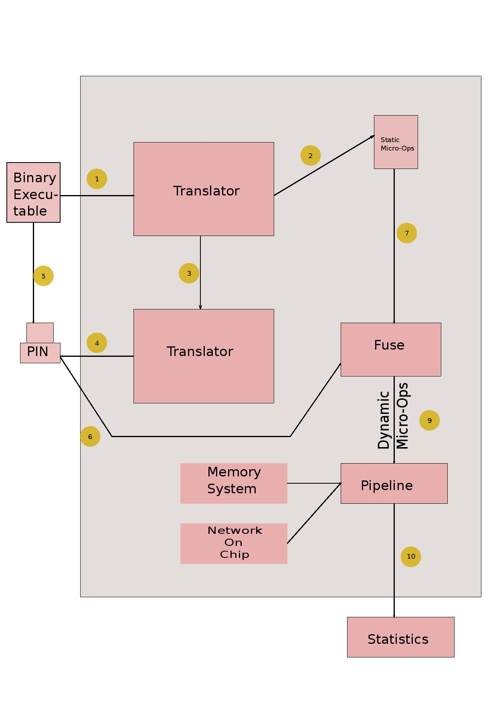
The basic structure of the Tejas simulator is shown above. We disassemble the input executable using the GNU objdump utility. The disassembly information is fed to a translator module which takes as input, an instruction in native low-level instruction set like x86 and ARM, and outputs a list of instructions in VISA. We call this VISA operations, micro operations. In order to obtain the execution trace of the program, we run the program on the native machine and collect useful information like load/store and thread start/stop using Pin tool. This instrumented information is passed to Tejas using different mechanisms like shared memory, sockets and pipes.
The translator module of the simulator has to map different instruction sets on VISA. A CISC instruction set like x86 contains hundreds of instructions. Some instructions are rare and they do not fall in the architecturally significant domain. It is not possible to map all these type of instructions on VISA, we typically translate a large number of most commonly used instructions in the given instruction set architecture. Since, the program execution is performed on a different emulator like Qemu or a native machine, we always have a correct flow of the application.Thus, can afford to skip some instructions in order to keep the design of the simulator, simple and scalable.
Coverage of Translator
The skipping of certain instructions in the executable can cause incorrect results if we skip the commonly occurring instructions. We have defined metrics; namely static coverage and dynamic coverage of the translator to measure its completeness.
Static Coverage of the translator is the fraction of instructions in the object executable that could be translated into VISA. We also define the Dynamic Coverage of the simulator to the fraction of dynamically executed instructions that were translated to VISA. The Dynamic Coverage of the simulator will reduce if a certain non-translated instruction was executed in a loop repeatedly. We have noted that the coverage of the translator for i386 instruction set is above 95 % for most of the benchmarks. The formula for dynamic coverage does not cover complex instructions like rep. However, while comparing the translated instructions with the execution trace, we found that the number of such instructions was comparatively less.
Pipeline Types
Tejas provides two pipeline types :
- Multi-Issue In-Order
- Out-of-Order
Semi-Event-Driven Model
Tejas follows a semi-event-driven model :
- for activities that occur regularly, with predictable latencies (e.g, decode stage happens every cycle (unless there is some stall, which is not frequent), and always takes the same amount of time), an iterative approach is applied
- for activities that occur irregularly, with unpredictable latencies (e.g, executing a load/store), an event-driven approach is applied.
Features Common to Both Pipelines
Both pipeline types share some common features :
- A unified pipeline interface exposed to the rest of the system
- A queue of instructions forms the input to the pipeline. The translator feeds instructions into this queue.
- A function that describes the pipeline's one cycle operation. This function is called in the principal simulation loop, where the global time is advanced by one cycle in each iteration.
- Branch predictor
- The different predictors provided are : Always Taken, Always Not Taken, Bimodal, GAg, GAp, PAg, PAp, GShare, and tournament predictors.
- New predictors can be easily added.
In-order Pipeline
A standard 5-stage pipeline is implemented. The five stages and the description of their implementation is as follows :
- Instruction Fetch : An instruction is fetched from the input queue (that is filled by the translator). A request to the i-cache is made, the address equal to the program counter of the instruction. Meanwhile, the instruction is placed in a fixed size buffer called the iCacheBuffer. The instruction resides here until the i-cache responds. Once it does, the entry from the iCacheBuffer is removed, and the instruction fetch is deemed complete.
- Instruction Decode : Typically a 1-cycle operation. To handle dependencies, the time when each register's value will be ready is maintained. An instruction stays in the decode stage until both its source operands are ready, and the corresponding functional unit is available. Once available, depending on the type of operation, the destination register's time when ready is set. For a load instruction, whose latency cannot be determined at decode time, the time when ready is set to infinity. Branch prediction is performed in the decode stage -- a mis-prediction results in a penalty of further instruction fetches being stalled for a pre-determined number of cycles (configurable).
- Execute Stage : An instruction occupies the execute stage until the corresponding functional unit completes.
- Memory Stage : If a load instruction, it occupies this stage until the memory system responds. The corresponding destination register's time when ready is set to the current time when the load completes.
- Write-back Stage : Simulated as a 1 cycle operation.
Multi-issue In-order Pipeline
The width of the pipeline can be more than 1 (set <IssueWidth> tag in the configuration file). The architecture implemented is based on the Intel Pentium processor (Alpert et. al., 1993). Multiple instructions can be processed by a stage in 1 cycle This processing happens in-order, brought about by modeling the latches between stages as circular queues of size equal to the pipeline width. All types of hazards are strictly handled.
Out-of-Order Pipeline
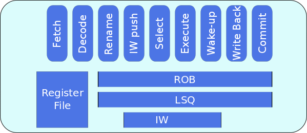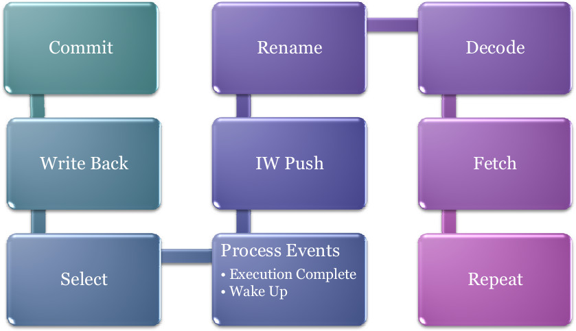
The out-of-order pipeline is made up of the following stages :
- Instruction Fetch : An instruction is fetched from the input queue (that is filled by the translator). A request to the i-cache is made, the address equal to the program counter of the instruction. Meanwhile, the instruction is placed in a fixed size buffer called the iCacheBuffer. The instruction resides here until the i-cache responds. Once it does, the entry from the iCacheBuffer is removed, and the instruction fetch is deemed complete.
- Instruction Decode : Once fetched, “instruction decode” is simulated. Again, since all details are known, only timing is simulated by advancing the clock. A Reorder Buffer entry and a Load-Store Queue entry (if memory operation) are made at this point. Unavailability of free entries causes the pipeline to stall till entries are available.
- Rename : An available physical register is assigned to the destination operand. Unavailability causes the pipeline to stall. The physical registers corresponging to the source oeprands are dteremined, and their availability, that is, whether or not their values are available in the register file, is ascertained. The rename logic is made up of a register alias table (RAT) and a list of available registers.
- Instruction Window Push : The next stage involves the creation of an Instruction Window entry. Unavailability causes pipeline stalling. The size of the Instruction Window, Reorder Buffer and Load-Store Queue can be specified in the configuration file.
- Instruction Select : The select logic, in every cycle, processes the entries in the IW, looking for ready instructions. If the operands of an instruction in the Instruction Window are available, and a functional unit that it can execute on is available, the instruction is issued for execution. The issue width can be set in the configuration file. The IW entries are processed in-order -- so if more than issue width number of instructions are found ready, the ones that entered the window earlier are given preference.
- Execute : The instruction stays in the execute stage until the execution completes. Based on the type of operation, execution times vary -- upon issue, an event signalling completion of execution is scheduled for n cycles from the current time, where n is the latency of the corresponding functional unit. The latency of the functional units can be set in the configuration file. A load instruction can be serviced through load-store forwarding, if a store to the same address occupies an earlier position in the queue.
- Wake-up : Once execution completes, the instructions waiting for the result (dependent instructions) are woken up to begin execution in the very next cycle. This feature is elaborated below.
- Write-back : The register corresponding to the destination operand is marked ready.
- Commit : The last stage is the commit of the instruction. First, if the instruction was a branch, a prediction is performed. The prediction is compared with the actual outcome. If they differ, then the penalty for misprediction is simulated by stalling all stages of the pipeline for a pre-specified (in the configuration file) number of cycles. If the instruction being committed is a store, the Load-Store Queue is intimated that it may allow the value to be written to the memory heirarchy.
Wake-up Select Logic
Wake-up Select logic allows an instruction j waiting for instruction i’s result, to begin execution in the immediately next cycle after instruction i completes execution. When, instruction i completes, it wakes up all dependent instructions. It’s result is forwarded to the dependent instruction through the by-pass path, essentially storage associated with the functional units.
The wake-up signal is modelled as an event, “Broadcast Event”, as
it’s time cannot be statically determined. In simulation, Select is
performed before the events are processed. Therefore, the broadcast
event is scheduled at the same time as the execution complete event.
Doing this would set the availablility of the operand in this cycle
(the cycle when the producing
instruction completed execution). This instruction then becomes a candidate for selection in the next cycle.
Two cases exist that require special handling :
- Suppose the consuming instruction j was to be selected for execution in the same cycle (begins execution in the next cycle) as when instruction i completed execution. This isn’t possible with the above described solution, as it is the wake-up is performed in the same cycle as i’s completion. The selection can happen only in the next cycle, and the execution would thus begin in the cycle after that.
- Suppose the consuming instruction j is in the rename stage when the producing instruction i completes execution. j looks at the register file, and deems it’s operand unavailable. The broadcast signal sent by i touches only the instruction window, and is thus not seen by j. Subsequently, j enters the instruction window, and i updates the register file. Effectively, j has missed the wake-up signal and thus, remains perpetually in the pipeline.
To provide for these, a second broadcast event is scheduled in the clock cycle just preceding the one when i completes execution. This ensures the desired behavior.
Simultaneous Multi-Threading (SMT)
The out-of-order pipeline is capable of simultaneous multi-threading. The pipeline is provided with decode width (configurable) number of input queues that the translator can populate -- each queue corresponds to one thread. The pipeline reads from these queues in round-robin fashion -- one queue each cycle. Each instruction has a thread id field to help distinguish it when data dependencies are handled. When one thread faces a branch mis-prediction, all threads are stalled for the predefined penatly period.
Non-uniform Cache Architecture
Today’s high performance processors incorporate large level-two (L2) caches on the processor die. These sizes will continue to increase as the bandwidth demands on the package grow, and as smaller technologies permit more bits per mm2. In future technologies, large on-chip caches with a single, discrete hit latency will be undesirable, due to increasing global wire delays across the chip. Data residing in the part of a large cache close to the processor could be accessed much faster than data that reside physically farther from the processor.
Types of NUCA
- Static NUCA- Data are statically mapped into banks. S-NUCA caches static mappings of data to banks and the banks have non-uniform access times.
-
Dynamic NUCA- The future cache access non-uniformity can be expolited
by placing frequently accessed data in closer (faster) banks and less
important–yet still cached–data in farther banks. There are three
important questions about the management of data in the cache:
- mapping: how the data are mapped to the banks, and in which banks a datum can reside
- search: how the set of possible locations are searched to find a line,
- movement: under what conditions the data should be migrated from one bank to another.
Cache-Core Topology
Our implementation of NUCA follows tiled architecture. Each tile contains a core, a L1 cache , a L2 cache bank and a router.The routers are connected in a 2D-Mesh topology. L2 cache is distributed and each bank has its own local cache controller to handle requests from different cores and caches. In our implementation, each row in the design layout below is a bank-set.
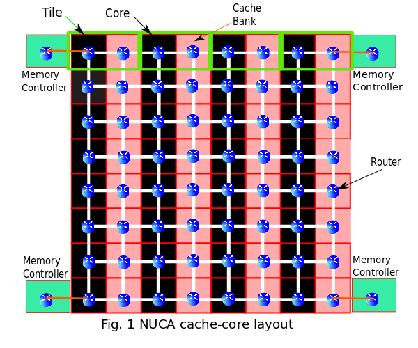
Policies in S-NUCA
S-NUCA follows the same strategies for both placement and searching. The requesting core directly sends the request to the statically determined bank based on the low-order bits of tag as shown in Fig.2. If a miss occurs at the bank, the request is immediately forwarded to the nearest memory controller. The data block from main memory is placed on this statically determined bank. S-NUCA does not have any migration policy, the evicted block from the cache bank is evicted from the LLC and written back to main memory.
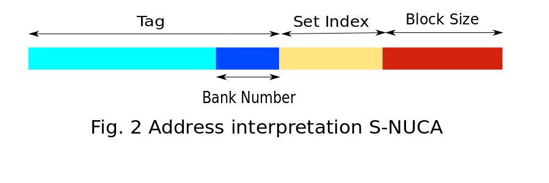
Policies in D-NUCA
Like in S-NUCA, in D-NUCA low-order bits of tag determines the bank number. In addition, it is further broken down into two parts - 1) Bank-set number 2) Bank Number within set. A data block can be placed in any of the banks within the bank-set.
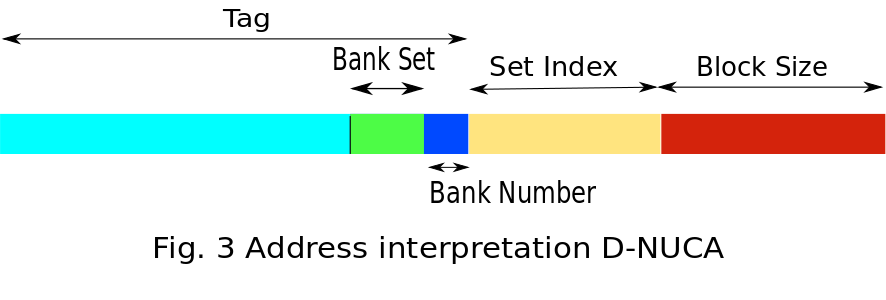
- Placement - In this strategy of block placement, when a cache miss occurs data from main memory is kept at the bank of the bank set nearest to the core.
-
Searching - Data request is broadcasted to all the cache banks present
in the bank-set. To restrict network traffic within the bank-set only.
A unicast request is sent to the bank within the bank-set closest to
the core. If a miss occurs, it broadcasts the requests to all other
banks in the bank-set.The steps are shown in figure 4 below.
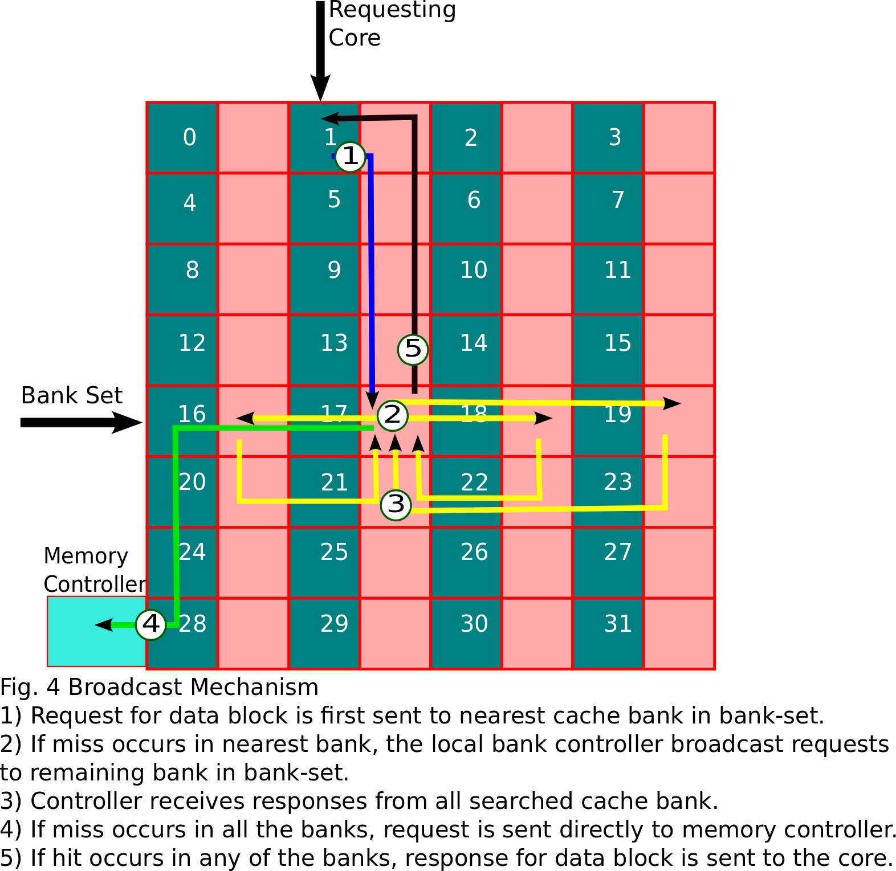
-
Migration - In order to reduce the access latency in D-NUCA searching
schemes, we have used bank-set level block migration. When a hit occurs
for a block in the bank of bank-set, the block is migrated to the bank
closer to the core (upward migration). If same block is accessed
multiple times, the data block migrates to bank closest to core. We are
not doing any downward migration in our scheme. When a block is evicted
from the bank it is not migrated to bank farther from core instead the
block is written back to the main memory. The mechanism is shown below
in figure 5.
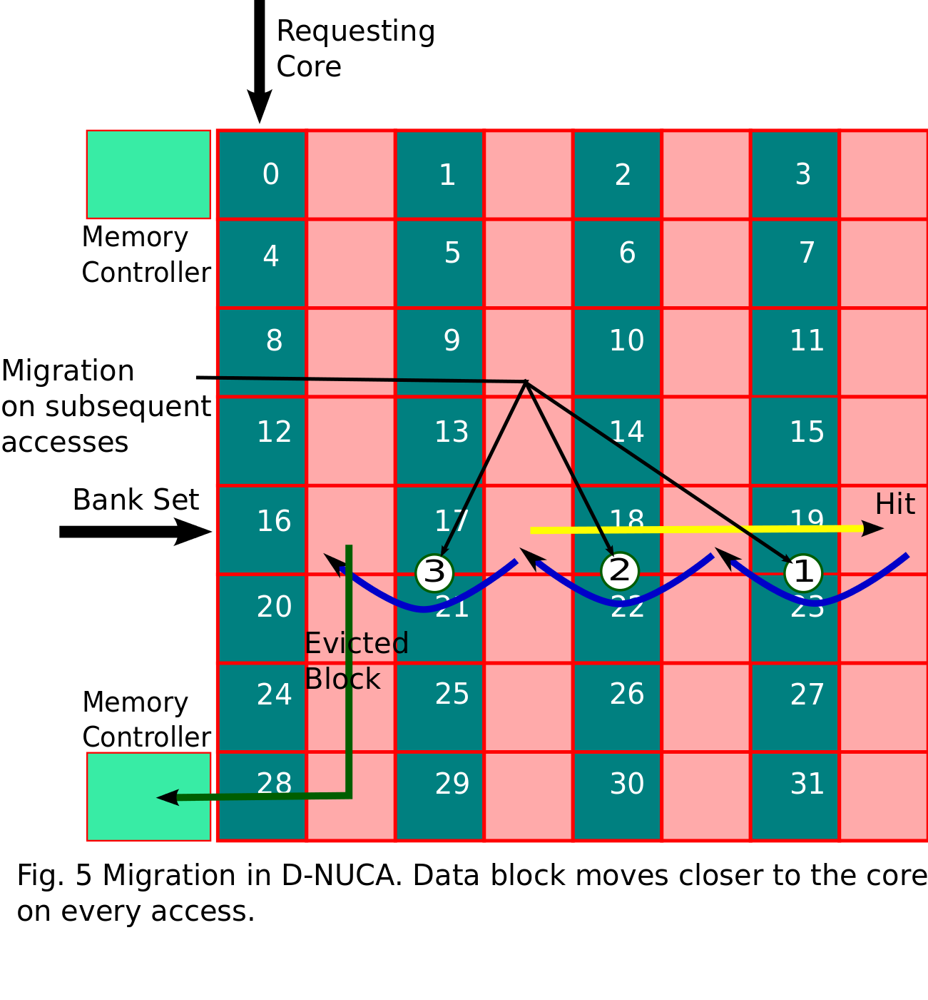
NOC stands for Network On Chip. NOC connects together different network elements such as cores and cache banks. Function of an NOC is to route the messages between the connected network elements. NOC is used when the number of elements to be connected is so large in number. In that case the normal one-to-one interconnection method becomes a tedious task and also it can result in increased latency and power consumption.
In Tejas, the NOC implementation is generic so that it can be used to connect any elements(cores, cache banks). “NetworkInterface.java” contains the interface functions to access the NOC. There are two types of implementation for NOC : one is optical and one is electrical. Optical NOC is implemented as a package within NOC.
NOC has a number of parameters that can be specified through a
configuration file for simulation. It has parameters that extended from
simulation element and also it has parameters of its own. An user can
specify the number of rows and columns for the NOC. This defines the
shape of the interconnection. One other parameters is number of
buffers. It shows the number of buffer space available for messages in
a router while passing through routers. NocLatencyBetweenBanks
defines the number of cycles required to move a message from one router
to other. An user can change the topology of the NOC interconnection
using the variable NocTopology` and he can select the routing algorithm by using NocRoutingAlgorithm. The interconnection type can be changed using the parameter NocConnection. The parameters NocRouterArbiter and TechPoint is for the power calculation of NOC.
Different NOC topologies that supported in Tejas are
• Mesh
• Ring
• Bus
• Torus
• Fat Tree
• Omega
• Butterfly
Different routing algorithms that implemented in Tejas are
• Simple-XY
• West-first
• North-last
• Negative-first
Tejas can support both static and dynamic routing schemes. Static routing scheme select the route statically while the dynamic scheme select the less congested route from the set of available routes.
Tejas implements functions for creating routers, interconnect those routers, finding the next router from source and destination values, allocation of buffer space, deadlock avoidance by giving priority to outgoing requests and many other basic functions for achieving the functionalities of an NOC.
In electrical NOC, request can come through the router (0,0). From there, the request is routed to the destination through intermediate links. The path depends upon the routing algorithm and the topology of interconnection. There can be reply messages that coming from within the NOC system, intended to move outside. The incoming and outgoing path may not be equal and it depends on the routing algorithm. Any request from some arbitrary router to another is supported. Each router is having N number of buffers and while routing one request from one router to other, the sender checks the availability of the buffer space in destination router and pass the request only if there is an availability of buffer in destination router, otherwise the sender will wait till the buffer space is available. There is a chance of dead lock in this case, if we are not giving any priority to the outgoing requests from the cache banks. So we have prioritized the outgoing request, as the incoming request can move forward only when there are two or more buffer space in the destination while the outgoing request can go on even when there is a single buffer space in the next hop router. Every parameter specified here in the NOC can be configured through the input configuration file. Static route selection scheme will be always select the same route while dynamic routing will select a route with less traffic from a number of available routes. The NOC is also provide the hop counter statistics as it gives the number of requests passed from each router. In fat tree, butterfly and omega topologies, other than the terminal nodes there are a number of intermediate switches to pass the request from source to destination. In NOC one request is treated as one message, that means one event that posted to router is considered as a message. It is not divided again into flits. The NOC interface is implemented as generic so that it can be re-used for interconnecting the cores in future.
Other than the NOC described above, which simulates electrical interconnections between routers, we have implemented an Optical NOC that captures the optical behavior of the signal communication. Optical NOC is hierarchical in structure and having three different types of optical buses – data bus, token bus and broadcast bus. Data bus is meant for passing data to and from cache banks, token bus is for passing token from one cache bank to other and broadcast bus is to broadcast the request for data to all the cache banks in one cluster. Access to the data bus is controlled using the token bus as the station which needs to send the data should collect the token from the token bus as the token passes through the token bus and keep the token with the station still it finishes the data transfer and then release the token back to the token bus. Two kinds of data transfer can be possible in this Optical NOC structure – local and global. Local messages are intended within a cluster while the global messages are the message which pass from one cluster to another. So multiple parallel local messages can be happen at a time, but only one global message can be at a time active in the optical NOC.
A small description about the files the NOC package is given below
• Switch.java - Contains the functions for buffer.
• NocInterface.java - Interface to the NOC.
• Router.java - Contains the parameters of router, route computation and handleEvent function.
• RoutingAlgo.java - Functions that implement routing algorithms.
• NOC.java - Defines supporting topologies and functions interconnect network elements.
• Databus.java, BroadcastBus.java, TokenBus.java - Implement Differentoptical buses.
• OpticalNOC.java - Contains optical parameters related to optical technology.
• EntryPoint.java - Implements the entry point to the optical NOC.
Code Structure of NOC:
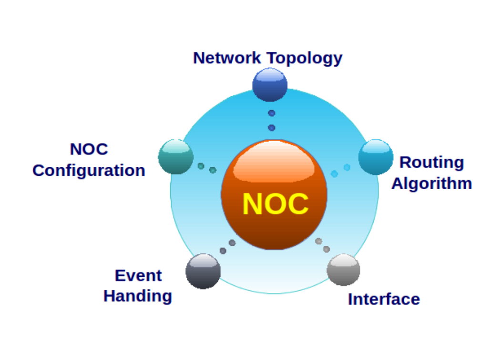